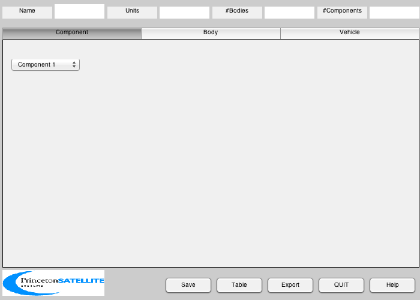
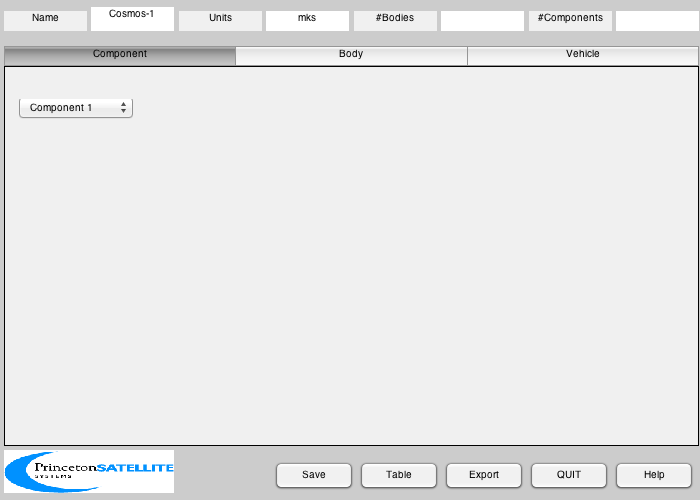
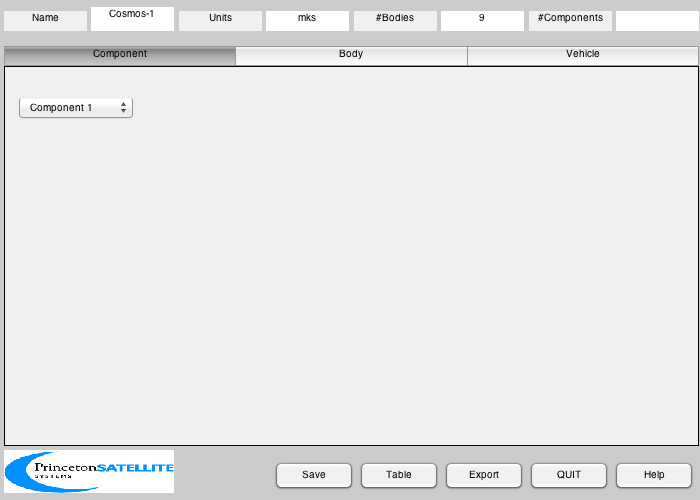
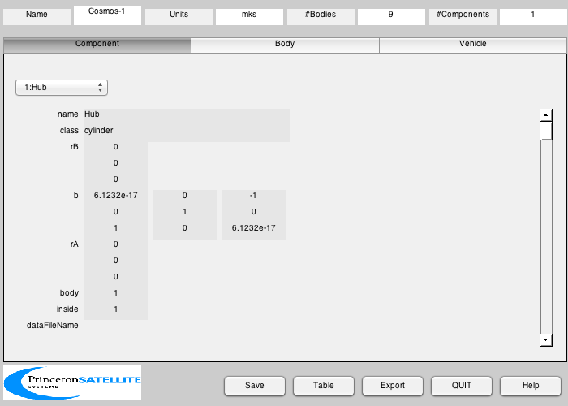
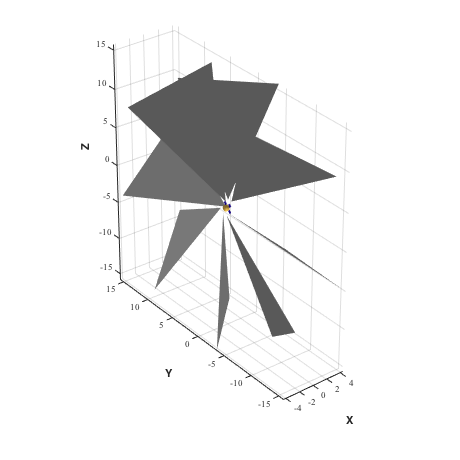

CAD model of the Cosmos-1 solar sail.
Includes a separate body for each vane so they may be independently
rotated. Each vane is a simple triangle.
Since version 7.
------------------------------------------------------------------------
See also BuildCADModel, CreateBody, CreateComponent, DrawSCPlanPlugIn,
ExportCAD, Eul2Mat, FindDirectory, SaveStructure, Centroid, CosD, SinD,
Unit
------------------------------------------------------------------------
Contents
Dimensions of central hub
dHub = 0.75;
hHub = 0.4;
mHub = 30;
Vane parameters
lVane = 15;
arealMass = 0.011;
mVane = 23/8;
Initialize
BuildCADModel( 'initialize' );

Add spacecraft properties
BuildCADModel( 'set name' , 'Cosmos-1' );
BuildCADModel( 'set units', 'mks' );

Create CAD bodies
Create names for all of the bodies
hubBody = 1;
vaneBody = 2:9;
Core
m = CreateBody( 'make', 'name', 'Core' );
BuildCADModel('add body', m );
Vanes
uVane = Unit([0 0 0 0 0 0 0 0;...
1 1 0 -1 -1 -1 0 1;...
0 1 1 1 0 -1 -1 -1]);
angle = [2 1 0 -1 -2 -3 -4 -5]*pi/4;
r0Sail = dHub*uVane;
for k = 1:8
hinge.b = Eul2Mat( [angle(k);0;0] );
hinge.axis = 3;
m = CreateBody( 'make', 'name', ['Vane ' num2str(k)], 'previousBody', 1, ...
'rHinge', r0Sail(:,k), 'bHinge', hinge);
BuildCADModel('add body', m );
end

This creates the connections between the bodies
BuildCADModel( 'compute paths' );
Create CAD Components second
m = CreateComponent( 'make', 'cylinder', 'name', 'Hub', 'body', hubBody,...
'rUpper',0.5*dHub,'rLower',0.5*dHub,'h',hHub,...
'b',Eul2Mat([0;pi/2;0]),'rA',[0;0;0],...
'faceColor', 'gold foil','mass', mHub );
BuildCADModel( 'add component', m );

Solar Arrays: 4
f = [1 2 3;1 3 4];
v = [0 dHub/2 -hHub/2;0 dHub/2 + hHub -hHub/2;0 dHub/2+hHub hHub/2; 0 dHub/2 hHub/2];
for k = 1:4
a = 45*(2*k - 1);
m = CreateComponent( 'make', 'generic','faceColor', 'solar cell','vertex', v, 'face', f,...
'electricalConversionEfficiency', 0.18,...
'mass', 0.5,'b',[1 0 0;0 CosD(a) SinD(a);0 -SinD(a) CosD(a)],...
'name', ['solar panel ' num2str(k)], 'body', hubBody );
BuildCADModel( 'add component', m );
end
Actual Sail vanes - 8. Rotation is performed at the body level.
vX = 0.5*[1 1 1 1 -1 -1 -1 -1];
hSail = 1.8*lVane*tan(pi/8);
ISail = mVane*diag([1/72*(4*lVane^2+3*hSail^2) 1/18*lVane^2 1/24*hSail^2]);
for k = 1:8
v = [ vX(k) vX(k) vX(k);...
0 0.9*lVane*tan(pi/8) -0.9*lVane*tan(pi/8);...
0 lVane lVane];
cMSail = Centroid(v);
m = CreateComponent( 'make', 'sail', 'faceColor', 'mirror','rA',[0;0;0],...
'vertex', v', 'face', [1 2 3],...
'inside',0,...
'mass', mVane, 'cM', cMSail,'inertia',ISail,...
'sigmaS', [1 1], 'sigmaD', [0 0], 'sigmaT',[0 0],'sigmaA',[0 0],...
'emissivity',[0.2 0.2],...
'name', sprintf('Sail %i', k), 'body', vaneBody(k) );
BuildCADModel( 'add component', m );
end
Update
BuildCADModel( 'update body mass properties' );
Get CAD data in a struct
g = BuildCADModel( 'get cad model' );
Export CAD model to a mat file for use in other functions
dPath = FindDirectory('SailData');
ExportCAD( g, fullfile(dPath,['Cosmos1']) );
SaveStructure( g, fullfile(dPath,['Cosmos1']) );
3D View
DrawSCPlanPlugIn('initialize',g);
